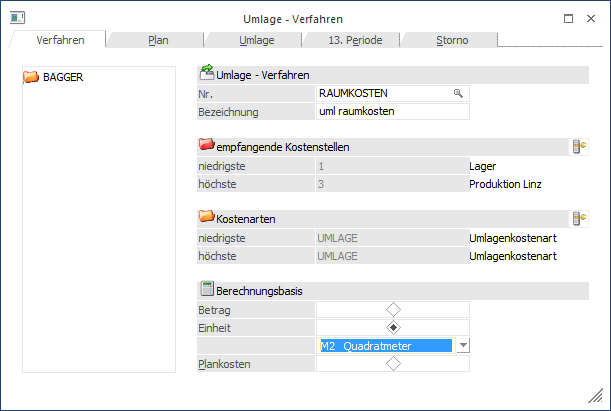
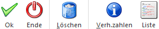
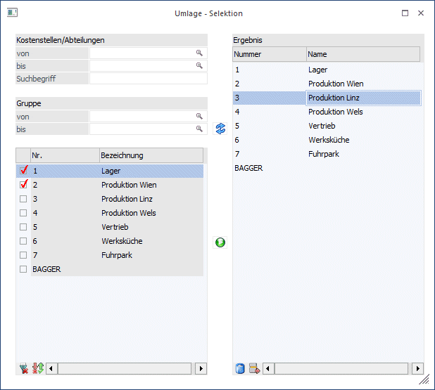

Manche Kostenstellen (meist Hilfskostenstellen) dienen lediglich dazu, Kosten vorübergehend aufzunehmen, die weder einem Kostenträger direkt noch über eine Produktions- oder Verwaltungskostenstelle indirekt zugeordnet werden können (z.B. Fuhrpark, Werksküche, etc.).
Diese Kosten werden im Menüpunkt
1 Kosten
1 Umlage
oder Schnellaufruf
1 STRG + U
aufgrund des vorher festgelegten Umlageverfahrens weiterverteilt. Nach dieser Umlage sollte auf jeden Fall nochmals der BAB abgerufen werden, da sich durch die Umlage das Verhältnis der Gemeinkosten zu den Einzelkosten auf den einzelnen Kostenstellen geändert hat (siehe Kapitel "Betriebsabrechnungsbogen").
Im Register "Verfahren" hinterlegen Sie die Kostenarten, die als Basis für die Berechnung der Verhältniszahlen von Umlageverfahren dienen, sowie den Bereich der empfangenden Kostenstellen, die in der Umlage grundsätzlich mitspielen sollen. Über den Button "Auswahl" bei den einzelnen Bereichen gelangen Sie in die Detailauswahl, in der Sie gewünschten Kostenstellen und -arten selektieren können.

Ø Nr.
Eintragung einer beliebigen Nummer, wenn Sie ein neues Verfahren anlegen möchten. Wenn Sie ein bestehendes Umlageverfahren bearbeiten möchten, können Sie durch Anwählen der Lupe oder Drücken der F9-Taste nach bereits angelegten Umlageverfahren suchen.
Ø Bezeichnung
Eintragung eines Textes für das Umlageverfahren.
Ø Empfangende Kostenstellen niedrigste/höchste
Hier wird der Bereich der selektierten Kostenstellen angezeigt, welche in der Umlage grundsätzlich als empfangende Kostenstellen berücksichtigt werden sollen.
Beispiel
Sie möchten ein Umlageverhältnis auf Basis der gebuchten Leistungslöhne errechnen lassen à dann grenzen Sie hier auf die Kostenart "Leistungslöhne" ein. Wenn Sie nach "m²" der einzelnen Kostenstellen die Umlage errechnen lassen möchten, grenzen Sie hier auf die Kostenart ein, mit der Sie im Menüpunkt "Umlagekosten - Erfassung" die Quadratmeter auf die einzelnen Kostenstellen zugeordnet haben, usw.
Kostenarten
Hier erfolgt die Selektion der Kostenarten, auf deren Basis die Verhältniszahlen errechnet werden sollen.
Ø Kostenarten niedrigste/höchste
Hier wird der Bereich der selektierten Kostenarten angezeigt, auf deren Basis die Verhältniszahlen errechnet werden sollen.
Berechnungsbasis
Sie können entweder den Buchungsbetrag oder die Einheiten als Basis zur Berechnung von Verhältniszahlen auswählen.
Ø Betrag
Aufgrund der ausgewählten Kostenstellen und Kostenarten und den darauf gebuchten Kosten wird eine Berechnungsbasis in Prozent gebildet. Diese Prozentsätze werden als Basis für die eigentliche Umlage von Kostenstellen verwendet (z.B. die Summe der auf den empfangenden Kostenstellen gebuchten Leistungslöhne).
Welche Kostenstelle umgelegt wird, und welche Kostenarten davon, wird im nächsten Register "PLAN" bestimmt. Wurde unter "Kostenarten von - bis" auf Plankostenarten eingegrenzt, ist diese Option deaktiviert (gegrayed), da bei Plankostenarten die Beträge ja erst im Zuge der Umlage zugewiesen bekommen.
Ø Einheit
Wurde der Radiobutton auf die "Einheit" gesetzt, können Sie bereits angelegte Einheiten (Std., KG, KM) aus der Combobox als Basis für die Berechnung von Verhältniszahlen auswählen (z.B. die mit der Kostenart "Leistungslöhne" gebuchten STUNDEN). Wurde unter "Kostenarten von - bis" auf Plankostenarten eingegrenzt, wird bei Verwendung dieser Option die Summe der umzulegenden Kosten durch die Anzahl der mit der Plankostenart gebuchten Einheiten dividiert. Dadurch ergibt sich ein IST-Kostensatz pro Einheit (also z.B. der Stundensatz), mit dem die bereits erfassten Plankosten-Einheiten auf den Kostenstellen und Kostenträgern im Zuge der Umlage bewertet werden.
Ø Plankosten
Wurde unter "Kostenarten von - bis" nicht auf Plankostenarten eingegrenzt, steht diese Option nicht zur Verfügung (gegrayed). Bei Eingrenzung auf Plankostenarten wird bei Verwendung dieser Option die Anzahl der mit der Plankostenart gebuchten Einheiten mit dem in der Plankostenart hinterlegten Satz (z.B. dem geplanten Stundensatz) multipliziert und die umzulegende Kostenstelle im Zuge der Umlage um die entsprechende Gesamtsumme entlastet, während die bereits im Journal erfassten Buchungen mit der Plankostenart mit der anteiligen Summe belastet werden. Dadurch ergibt sich eine Über- oder Unterdeckung auf der umgelegten Kostenstelle, die dem Kostenstellenverantwortlichen somit zeigt, ob der geplante Satz zu hoch oder zu niedrig angesetzt war.
Hinweis 1
Die Umlageverhältnisse werden immer für jede Periode separat errechnet (siehe Kapitel "Umlagekosten - Erfassung). Ebenso wird die Umlage einzeln pro Monat (Achtung auf das Buchungsdatum) durchgeführt.
Die Anlage der Einheiten erfolgt im Menü Stammdaten/Einheitenanlage. Sollte es notwendig sein nachträglich Einheiten (Mengen, Prozent) ohne Kosten zu erfassen bzw. zu korrigieren, können Sie dies im Menü Kosten/Erfassung oder Kosten/Umlagekosten-Erfassung
durchführen.
Beispiel
Sie möchten die Werksküche auf Basis der Mitarbeiteranzahl pro Periode verteilen. Das System berechnet aufgrund der eingegebenen Mitarbeiter (über eine Kostenart "Mitarbeiter" mit der Einheit "Mitarbeiter", die für jede Periode vorgegeben wurde) die Verhältniszahlen.
Hinweis 2
Für Umlageverfahren im Zuge der Plankostenrechnung wird bei der Berechnungsbasis automatisch die Einheit aus der Plankostenart vorgeschlagen.
Buttons

Ø OK
Mit OK bestätigen Sie die Anlage eines neuen Umlageverfahrens.
Ø Ende
Mit Ende verwerfen Sie ihr Umlageverfahren. Das Fenster wird geschlossen und ihre Daten werden nicht gespeichert, sofern Sie nicht vorher schon OK gedrückt haben.
Ø Löschen
Mit dem Löschen-Button können bereits angelegte Verfahren gelöscht werden. Achtung auf die Reihenfolge beim Löschen: Ein Umlageverfahren kann nur gelöscht werden, wenn es nicht in einem Umlageplan verwendet wird. D.h. falls erforderlich, zuerst im Register Pläne gewünschte Löschungen durchführen.
Ø Verh.zahlen
siehe Abschnitt Umlage - Verhältniszahlen
Ø Liste
Mit dem Drücken auf den Button "Liste" erhalten Sie eine Auflistung sämtlicher angelegter Umlageverfahren.
Fensterbuttons
Ø Auswahl
Über den Button "Auswahl" erfolgt die Auswahl der Kostenstellen. Nur diese Kostenstellen werden für die Berechnung des Umlageverhältnisses herangezogen und nur diese Kostenstellen erhalten bei der Umlage auch Belastungen über die Umlagekostenart.
Ø  Anzeigen
Anzeigen
Über den Anzeigen-Button werden die Datensätze aufgelistet.
Ø  Hinzufügen
Hinzufügen
Alle ausgewählten Datensätze können dann mittels der Ergebnisliste der rechten Seite hinzugefügt werden.
Beispiel
Wenn also z.B. die Kostenstelle 4 nichts erhalten soll, nehmen Sie die Kostenstelle 4 einfach durch Entfernen des Häkchens aus:

Tabellenbuttons
Ø Alle auswählen
Es werden alle zur Verfügung stehenden Einträge ausgewählt.
Ø Umkehr
Die aktuelle Selektion wird umgekehrt.
Ø Löschen
Der gesamte Inhalt der Ergebnistabelle wird gelöscht
Ø Entfernen
Nur die jeweils angewählte Zeile in der Ergebnistabelle wird entfernt.